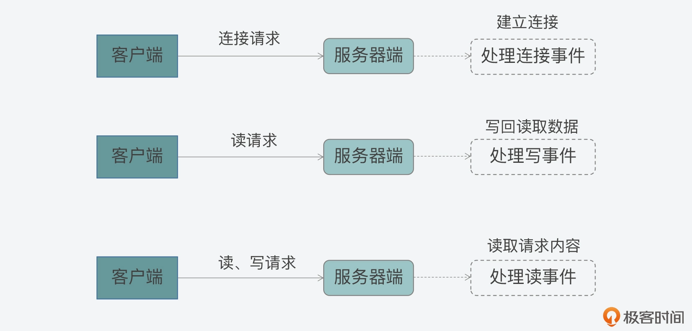
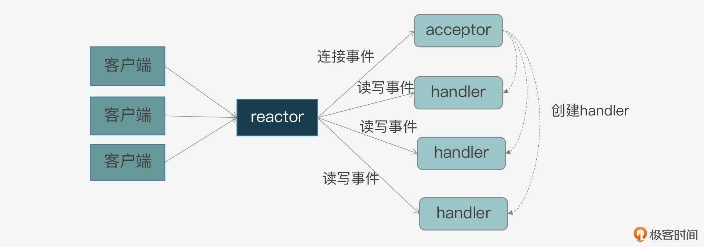
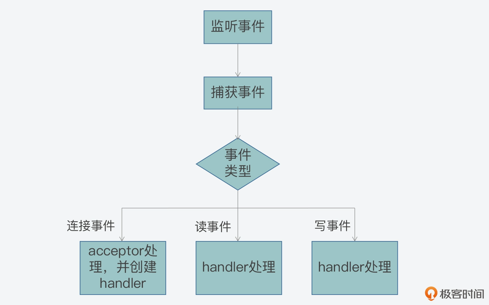
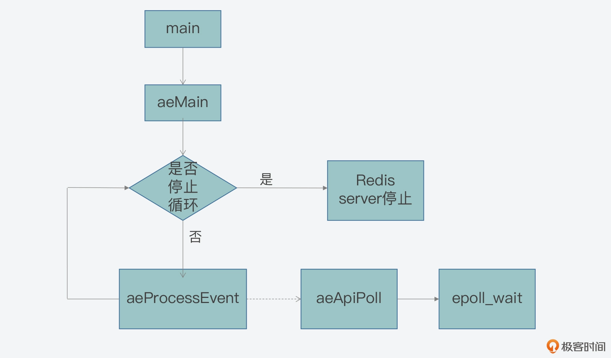
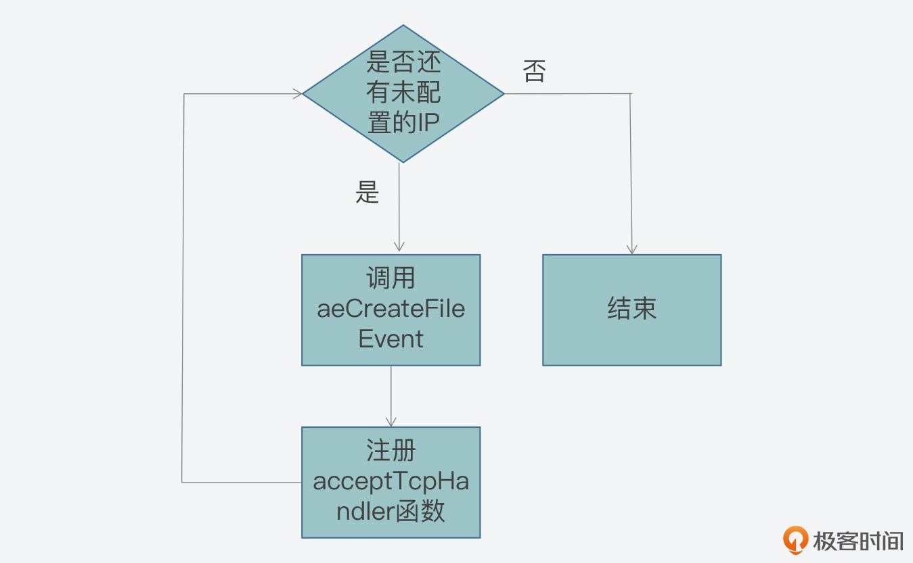
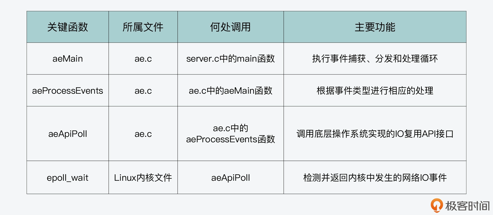

- 00 开篇词 阅读Redis源码能给你带来什么？.md.html
- 01 带你快速攻略Redis源码的整体架构.md.html
- 02 键值对中字符串的实现，用char还是结构体？.md.html
- 03 如何实现一个性能优异的Hash表？.md.html
- 04 内存友好的数据结构该如何细化设计？.md.html
- 05 有序集合为何能同时支持点查询和范围查询？.md.html
- 06 从ziplist到quicklist，再到listpack的启发.md.html
- 07 为什么Stream使用了Radix Tree？.md.html
- 08 Redis server启动后会做哪些操作？.md.html
- 09 Redis事件驱动框架（上）：何时使用select、poll、epoll？.md.html
- 10 Redis事件驱动框架（中）：Redis实现了Reactor模型吗？.md.html
- 11 Redis事件驱动框架（下）：Redis有哪些事件？.md.html
- 12 Redis真的是单线程吗？.md.html
- 13 Redis 6.0多IO线程的效率提高了吗？.md.html
- 14 从代码实现看分布式锁的原子性保证.md.html
- 15 为什么LRU算法原理和代码实现不一样？.md.html
- 16 LFU算法和其他算法相比有优势吗？.md.html
- 17 Lazy Free会影响缓存替换吗？.md.html
- 18 如何生成和解读RDB文件？.md.html
- 19 AOF重写（上）：触发时机与重写的影响.md.html
- 20 AOF重写（下）：重写时的新写操作记录在哪里？.md.html
- 21 主从复制：基于状态机的设计与实现.md.html
- 22 哨兵也和Redis实例一样初始化吗？.md.html
- 23 从哨兵Leader选举学习Raft协议实现（上）.md.html
- 24 从哨兵Leader选举学习Raft协议实现（下）.md.html
- 25 PubSub在主从故障切换时是如何发挥作用的？.md.html
- 26 从Ping-Pong消息学习Gossip协议的实现.md.html
- 27 从MOVED、ASK看集群节点如何处理命令？.md.html
- 28 Redis Cluster数据迁移会阻塞吗？.md.html
- 29 如何正确实现循环缓冲区？.md.html
- 30 如何在系统中实现延迟监控？.md.html
- 31 从Module的实现学习动态扩展功能.md.html
- 32 如何在一个系统中实现单元测试？.md.html
- 结束语 Redis源码阅读，让我们从新开始.md.html
- 捐赠
10 Redis事件驱动框架（中）：Redis实现了Reactor模型吗？
今天，我们来聊聊 Redis 是如何实现 Reactor 模型的。
你在做 Redis 面试题的时候，或许经常会遇到这样一道经典的问题：Redis 的网络框架是实现了 Reactor 模型吗？这看起来像是一道简单的“是 / 否”问答题，但是，如果你想给出一个让面试官满意的答案，这就非常考验你的高性能网络编程基础和对 Redis 代码的掌握程度了。
如果让我来作答这道题，我会把它分成两部分来回答：一是介绍 Reactor 模型是什么，二是说明 Redis 代码实现是如何与 Reactor 模型相对应的。这样一来，就既体现了我对网络编程的理解，还能体现对 Redis 源码的深入探究，进而面试官也就会对我刮目相看了。
实际上，Reactor 模型是高性能网络系统实现高并发请求处理的一个重要技术方案。掌握 Reactor 模型的设计思想与实现方法，除了可以应对面试题，还可以指导你设计和实现自己的高并发系统。当你要处理成千上万的网络连接时，就不会一筹莫展了。
所以今天这节课，我会先带你了解下 Reactor 模型，然后一起来学习下如何实现 Reactor 模型。因为 Redis 的代码实现提供了很好的参考示例，所以我会通过 Redis 代码中的关键函数和流程，来给你展开介绍 Reactor 模型的实现。不过在学习 Reactor 模型前，你可以先回顾上节课我给你介绍的 IO 多路复用机制 epoll，因为这也是学习今天这节课的基础。
Reactor 模型的工作机制
好，首先，我们来看看什么是 Reactor 模型。
实际上，Reactor 模型就是网络服务器端用来处理高并发网络 IO 请求的一种编程模型。我把这个模型的特征用两个“三”来总结，也就是：
- 三类处理事件，即连接事件、写事件、读事件；
- 三个关键角色，即 reactor、acceptor、handler。
那么，Reactor 模型是如何基于这三类事件和三个角色来处理高并发请求的呢？下面我们就来具体了解下。
事件类型与关键角色
我们先来看看这三类事件和 Reactor 模型的关系。
其实，Reactor 模型处理的是客户端和服务器端的交互过程，而这三类事件正好对应了客户端和服务器端交互过程中，不同类请求在服务器端引发的待处理事件：
- 当一个客户端要和服务器端进行交互时，客户端会向服务器端发送连接请求，以建立连接，这就对应了服务器端的一个连接事件。
- 一旦连接建立后，客户端会给服务器端发送读请求，以便读取数据。服务器端在处理读请求时，需要向客户端写回数据，这对应了服务器端的写事件。
- 无论客户端给服务器端发送读或写请求，服务器端都需要从客户端读取请求内容，所以在这里，读或写请求的读取就对应了服务器端的读事件。
如下所示的图例中，就展示了客户端和服务器端在交互过程中，不同类请求和 Reactor 模型事件的对应关系，你可以看下。

好，在了解了 Reactor 模型的三类事件后，你现在可能还有一个疑问：这三类事件是由谁来处理的呢？
这其实就是模型中三个关键角色的作用了：
- 首先，连接事件由 acceptor 来处理，负责接收连接；acceptor 在接收连接后，会创建 handler，用于网络连接上对后续读写事件的处理；
- 其次，读写事件由 handler 处理；
- 最后，在高并发场景中，连接事件、读写事件会同时发生，所以，我们需要有一个角色专门监听和分配事件，这就是 reactor 角色。当有连接请求时，reactor 将产生的连接事件交由 acceptor 处理；当有读写请求时，reactor 将读写事件交由 handler 处理。
下图就展示了这三个角色之间的关系，以及它们和事件的关系，你可以看下。

事实上，这三个角色都是 Reactor 模型中要实现的功能的抽象。当我们遵循 Reactor 模型开发服务器端的网络框架时，就需要在编程的时候，在代码功能模块中实现 reactor、acceptor 和 handler 的逻辑。
那么，现在我们已经知道，这三个角色是围绕事件的监听、转发和处理来进行交互的，那么在编程时，我们又该如何实现这三者的交互呢？这就离不开事件驱动框架了。
事件驱动框架
所谓的事件驱动框架，就是在实现 Reactor 模型时，需要实现的代码整体控制逻辑。简单来说，事件驱动框架包括了两部分：一是事件初始化；二是事件捕获、分发和处理主循环。
事件初始化是在服务器程序启动时就执行的，它的作用主要是创建需要监听的事件类型，以及该类事件对应的 handler。而一旦服务器完成初始化后，事件初始化也就相应完成了，服务器程序就需要进入到事件捕获、分发和处理的主循环中。
在开发代码时，我们通常会用一个 while 循环来作为这个主循环。然后在这个主循环中，我们需要捕获发生的事件、判断事件类型，并根据事件类型，调用在初始化时创建好的事件 handler 来实际处理事件。
比如说，当有连接事件发生时，服务器程序需要调用 acceptor 处理函数，创建和客户端的连接。而当有读事件发生时，就表明有读或写请求发送到了服务器端，服务器程序就要调用具体的请求处理函数，从客户端连接中读取请求内容，进而就完成了读事件的处理。这里你可以参考下面给出的图例，其中显示了事件驱动框架的基本执行过程：

那么到这里，你应该就已经了解了 Reactor 模型的基本工作机制：客户端的不同类请求会在服务器端触发连接、读、写三类事件，这三类事件的监听、分发和处理又是由 reactor、acceptor、handler 三类角色来完成的，然后这三类角色会通过事件驱动框架来实现交互和事件处理。
所以可见，实现一个 Reactor 模型的关键，就是要实现事件驱动框架。那么，如何开发实现一个事件驱动框架呢？
Redis 提供了一个简洁但有效的参考实现，非常值得我们学习，而且也可以用于自己的网络系统开发。下面，我们就一起来学习下 Redis 中对 Reactor 模型的实现。
Redis 对 Reactor 模型的实现
首先我们要知道的是，Redis 的网络框架实现了 Reactor 模型，并且自行开发实现了一个事件驱动框架。这个框架对应的 Redis 代码实现文件是ae.c，对应的头文件是ae.h。
前面我们已经知道，事件驱动框架的实现离不开事件的定义，以及事件注册、捕获、分发和处理等一系列操作。当然，对于整个框架来说，还需要能一直运行，持续地响应发生的事件。
那么由此，我们从 ae.h 头文件中就可以看到，Redis 为了实现事件驱动框架，相应地定义了事件的数据结构、框架主循环函数、事件捕获分发函数、事件和 handler 注册函数。所以接下来，我们就依次来了解学习下。
事件的数据结构定义：以 aeFileEvent 为例
首先，我们要明确一点，就是在 Redis 事件驱动框架的实现当中，事件的数据结构是关联事件类型和事件处理函数的关键要素。而 Redis 的事件驱动框架定义了两类事件：IO 事件和时间事件，分别对应了客户端发送的网络请求和 Redis 自身的周期性操作。
这也就是说，不同类型事件的数据结构定义是不一样的。不过，由于这节课我们主要关注的是事件框架的整体设计与实现，所以对于不同类型事件的差异和具体处理，我会在下节课给你详细介绍。那么在今天的课程中，为了让你能够理解事件数据结构对框架的作用，我就以 IO 事件 aeFileEvent 为例，给你介绍下它的数据结构定义。
aeFileEvent 是一个结构体，它定义了 4 个成员变量 mask、rfileProce、wfileProce 和 clientData，如下所示：
typedef struct aeFileEvent {
int mask; /* one of AE_(READABLE|WRITABLE|BARRIER) */
aeFileProc *rfileProc;
aeFileProc *wfileProc;
void *clientData;
} aeFileEvent;
- mask 是用来表示事件类型的掩码。对于网络通信的事件来说，主要有 AE_READABLE、AE_WRITABLE 和 AE_BARRIER 三种类型事件。框架在分发事件时，依赖的就是结构体中的事件类型；
- rfileProc 和 wfileProce 分别是指向 AE_READABLE 和 AE_WRITABLE 这两类事件的处理函数，也就是 Reactor 模型中的 handler。框架在分发事件后，就需要调用结构体中定义的函数进行事件处理；
- 最后一个成员变量 clientData 是用来指向客户端私有数据的指针。
除了事件的数据结构以外，前面我还提到 Redis 在 ae.h 文件中，定义了支撑框架运行的主要函数，包括框架主循环的 aeMain 函数、负责事件捕获与分发的 aeProcessEvents 函数，以及负责事件和 handler 注册的 aeCreateFileEvent 函数，它们的原型定义如下：
void aeMain(aeEventLoop *eventLoop);
int aeCreateFileEvent(aeEventLoop *eventLoop, int fd, int mask, aeFileProc *proc, void *clientData);
int aeProcessEvents(aeEventLoop *eventLoop, int flags);
而这三个函数的实现，都是在对应的 ae.c 文件中，那么接下来，我就给你具体介绍下这三个函数的主体逻辑和关键流程。
主循环：aeMain 函数
我们先来看下 aeMain 函数。
aeMain 函数的逻辑很简单，就是用一个循环不停地判断事件循环的停止标记。如果事件循环的停止标记被设置为 true，那么针对事件捕获、分发和处理的整个主循环就停止了；否则，主循环会一直执行。aeMain 函数的主体代码如下所示：
void aeMain(aeEventLoop *eventLoop) {
eventLoop->stop = 0;
while (!eventLoop->stop) {
…
aeProcessEvents(eventLoop, AE_ALL_EVENTS|AE_CALL_AFTER_SLEEP);
}
}
那么这里你可能要问了，aeMain 函数是在哪里被调用的呢？
按照事件驱动框架的编程规范来说，框架主循环是在服务器程序初始化完成后，就会开始执行。因此，如果我们把目光转向 Redis 服务器初始化的函数，就会发现服务器程序的 main 函数在完成 Redis server 的初始化后，会调用 aeMain 函数开始执行事件驱动框架。如果你想具体查看 main 函数，main 函数在server.c文件中，我们在【第 8 讲】中介绍过该文件，server.c 主要用于初始化服务器和执行服务器整体控制流程，你可以回顾下。
不过，既然 aeMain 函数包含了事件框架的主循环，那么在主循环中，事件又是如何被捕获、分发和处理呢？这就是由 aeProcessEvents 函数来完成的了。
事件捕获与分发：aeProcessEvents 函数
aeProcessEvents 函数实现的主要功能，包括捕获事件、判断事件类型和调用具体的事件处理函数，从而实现事件的处理。
从 aeProcessEvents 函数的主体结构中，我们可以看到主要有三个 if 条件分支，如下所示：
int aeProcessEvents(aeEventLoop *eventLoop, int flags)
{
int processed = 0, numevents;
/* 若没有事件处理，则立刻返回*/
if (!(flags & AE_TIME_EVENTS) && !(flags & AE_FILE_EVENTS)) return 0;
/*如果有IO事件发生，或者紧急的时间事件发生，则开始处理*/
if (eventLoop->maxfd != -1 || ((flags & AE_TIME_EVENTS) && !(flags & AE_DONT_WAIT))) {
…
}
/* 检查是否有时间事件，若有，则调用processTimeEvents函数处理 */
if (flags & AE_TIME_EVENTS)
processed += processTimeEvents(eventLoop);
/* 返回已经处理的文件或时间*/
return processed;
}
这三个分支分别对应了以下三种情况：
- 情况一：既没有时间事件，也没有网络事件；
- 情况二：有 IO 事件或者有需要紧急处理的时间事件；
- 情况三：只有普通的时间事件。
那么对于第一种情况来说，因为没有任何事件需要处理，aeProcessEvents 函数就会直接返回到 aeMain 的主循环，开始下一轮的循环；而对于第三种情况来说，该情况发生时只有普通时间事件发生，所以 aeMain 函数会调用专门处理时间事件的函数 processTimeEvents，对时间事件进行处理。
现在，我们再来看看第二种情况。
首先，当该情况发生时，Redis 需要捕获发生的网络事件，并进行相应的处理。那么从 Redis 源码中我们可以分析得到，在这种情况下，aeApiPoll 函数会被调用，用来捕获事件，如下所示：
int aeProcessEvents(aeEventLoop *eventLoop, int flags){
...
if (eventLoop->maxfd != -1 || ((flags & AE_TIME_EVENTS) && !(flags & AE_DONT_WAIT))) {
...
//调用aeApiPoll函数捕获事件
numevents = aeApiPoll(eventLoop, tvp);
...
}
...
}
那么，aeApiPoll 是如何捕获事件呢？
实际上，Redis 是依赖于操作系统底层提供的 IO 多路复用机制，来实现事件捕获，检查是否有新的连接、读写事件发生。为了适配不同的操作系统，Redis 对不同操作系统实现的网络 IO 多路复用函数，都进行了统一的封装，封装后的代码分别通过以下四个文件中实现：
- ae_epoll.c，对应 Linux 上的 IO 复用函数 epoll；
- ae_evport.c，对应 Solaris 上的 IO 复用函数 evport；
- ae_kqueue.c，对应 macOS 或 FreeBSD 上的 IO 复用函数 kqueue；
- ae_select.c，对应 Linux（或 Windows）的 IO 复用函数 select。
这样，在有了这些封装代码后，Redis 在不同的操作系统上调用 IO 多路复用 API 时，就可以通过统一的接口来进行调用了。
不过看到这里，你可能还是不太明白 Redis 封装的具体操作，所以这里，我就以在服务器端最常用的 Linux 操作系统为例，给你介绍下 Redis 是如何封装 Linux 上提供的 IO 复用 API 的。
首先，Linux 上提供了 epoll_wait API，用于检测内核中发生的网络 IO 事件。在ae_epoll.c文件中，aeApiPoll 函数就是封装了对 epoll_wait 的调用。
这个封装程序如下所示，其中你可以看到，在 aeApiPoll 函数中直接调用了 epoll_wait 函数，并将 epoll 返回的事件信息保存起来的逻辑：
static int aeApiPoll(aeEventLoop *eventLoop, struct timeval *tvp) {
…
//调用epoll_wait获取监听到的事件
retval = epoll_wait(state->epfd,state->events,eventLoop->setsize,
tvp ? (tvp->tv_sec*1000 + tvp->tv_usec/1000) : -1);
if (retval > 0) {
int j;
//获得监听到的事件数量
numevents = retval;
//针对每一个事件，进行处理
for (j = 0; j < numevents; j++) {
#保存事件信息
}
}
return numevents;
}
为了让你更加清晰地理解，事件驱动框架是如何实现最终对 epoll_wait 的调用，这里我也放了一张示意图，你可以看看整个调用链是如何工作和实现的。

OK，现在我们就已经在 aeMain 函数中，看到了 aeProcessEvents 函数被调用，并用于捕获和分发事件的基本处理逻辑。
那么，事件具体是由哪个函数来处理的呢？这就和框架中的 aeCreateFileEvents 函数有关了。
事件注册：aeCreateFileEvent 函数
我们知道，当 Redis 启动后，服务器程序的 main 函数会调用 initSever 函数来进行初始化，而在初始化的过程中，aeCreateFileEvent 就会被 initServer 函数调用，用于注册要监听的事件，以及相应的事件处理函数。
具体来说，在 initServer 函数的执行过程中，initServer 函数会根据启用的 IP 端口个数，为每个 IP 端口上的网络事件，调用 aeCreateFileEvent，创建对 AE_READABLE 事件的监听，并且注册 AE_READABLE 事件的处理 handler，也就是 acceptTcpHandler 函数。这一过程如下图所示：

所以这里我们可以看到，AE_READABLE 事件就是客户端的网络连接事件，而对应的处理函数就是接收 TCP 连接请求。下面的示例代码中，显示了 initServer 中调用 aeCreateFileEvent 的部分片段，你可以看下：
void initServer(void) {
…
for (j = 0; j < server.ipfd_count; j++) {
if (aeCreateFileEvent(server.el, server.ipfd[j], AE_READABLE,
acceptTcpHandler,NULL) == AE_ERR)
{
serverPanic("Unrecoverable error creating server.ipfd file event.");
}
}
…
}
那么，aeCreateFileEvent 如何实现事件和处理函数的注册呢？这就和刚才我介绍的 Redis 对底层 IO 多路复用函数封装有关了，下面我仍然以 Linux 系统为例，来给你说明一下。
首先，Linux 提供了 epoll_ctl API，用于增加新的观察事件。而 Redis 在此基础上，封装了 aeApiAddEvent 函数，对 epoll_ctl 进行调用。
所以这样一来，aeCreateFileEvent 就会调用 aeApiAddEvent，然后 aeApiAddEvent 再通过调用 epoll_ctl，来注册希望监听的事件和相应的处理函数。等到 aeProceeEvents 函数捕获到实际事件时，它就会调用注册的函数对事件进行处理了。
好了，到这里，我们就已经全部了解了 Redis 中实现事件驱动框架的三个关键函数：aeMain、aeProcessEvents，以及 aeCreateFileEvent。当你要去实现一个事件驱动框架时，Redis 的设计思想就具有很好的参考意义。
最后我再带你来简单地回顾下，在实现事件驱动框架的时候，你需要先实现一个主循环函数（对应 aeMain），负责一直运行框架。其次，你需要编写事件注册函数（对应 aeCreateFileEvent），用来注册监听的事件和事件对应的处理函数。只有对事件和处理函数进行了注册，才能在事件发生时调用相应的函数进行处理。
最后，你需要编写事件监听、分发函数（对应 aeProcessEvents），负责调用操作系统底层函数来捕获网络连接、读、写事件，并分发给不同处理函数进一步处理。
小结
Redis 一直被称为单线程架构，按照我们通常的理解，单个线程只能处理单个客户端的请求，但是在实际使用时，我们会看到 Redis 能同时和成百上千个客户端进行交互，这就是因为 Redis 基于 Reactor 模型，实现了高性能的网络框架，通过事件驱动框架，Redis 可以使用一个循环来不断捕获、分发和处理客户端产生的网络连接、数据读写事件。
为了方便你从代码层面掌握 Redis 事件驱动框架的实现，我总结了一个表格，其中列出了 Redis 事件驱动框架的主要函数和功能、它们所属的 C 文件，以及这些函数本身是在 Redis 代码结构中的哪里被调用。你可以使用这张表格，来巩固今天这节课学习的事件驱动框架。

最后，我也再强调下，这节课我们主要关注的是，事件驱动框架的基本运行流程，并以客户端连接事件为例，将框架主循环、事件捕获分发和事件注册的关键步骤串起来，给你做了介绍。Redis 事件驱动框架监听处理的事件，还包括客户端请求、服务器端写数据以及周期性操作等，这也是我下一节课要和你一起学习的主要内容。
每课一问
这节课我们学习了 Reactor 模型，除了 Redis，你还了解什么软件系统使用了 Reactor 模型吗？
© 2019 - 2023 Liangliang Lee. Powered by gin and hexo-theme-book.